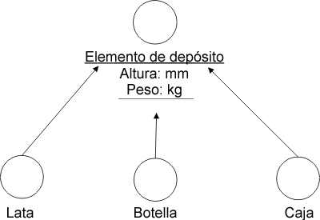
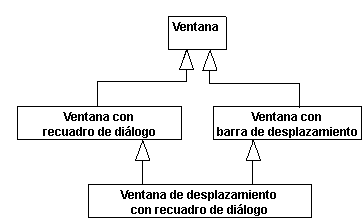
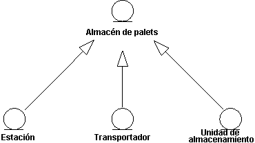
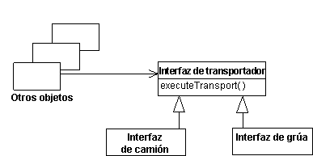
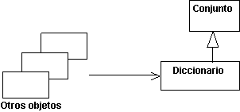
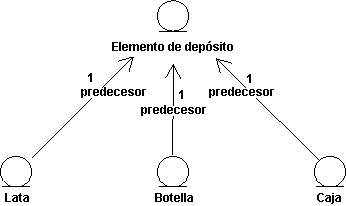

| Directriz: Generalización |
 |
|
| Elementos relacionados |
|---|
GeneralizaciónMuchas cosas de la vida real tienen propiedades comunes. Los perros y los gatos son animales, por ejemplo. Los objetos pueden tener también propiedades comunes, que podrá aclarar mediante una generalización entre sus clases. Gracias a la extracción de propiedades comunes en clases independientes, puede cambiar y mantener el sistema más fácilmente en el futuro. Una generalización muestra que una clase hereda de otra clase. La clase que hereda se denomina descendiente. La clase heredada se denomina predecesor. La herencia significa que la definición del predecesor, incluidas todas las propiedades como, por ejemplo, atributos, relaciones u operaciones en sus objetos, también es válida para objetos del descendiente. La generalización se extrae de la clase descendiente a la clase predecesora. La generalización se lleva a cabo en varias fases, lo que permite modelar jerarquías complejas, de herencia de varios niveles. Las propiedades generales se sitúan en la parte superior de la jerarquía de la herencia, y las propiedades especiales en la parte inferior. En otras palabras, puede utilizar la generalización para modelar especializaciones de un concepto más general. Ejemplo En el sistema de máquina de reciclaje, todas las clases - Lata, Botella y Caja - describen tipos diferentes de elementos del depósito. Tiene dos propiedades comunes, a parte de ser del mismo tipo: cada una tiene una altura y un peso. Puede modelar las propiedades por medio de atributos y operaciones en una clase separada, Elemento de depósito. Lata, botella y caja heredan las propiedades de esta clase.  Las clases Lata, Botella y Caja tienen propiedades comunes peso y altura. Cada una de ellas es una especialización del concepto general Elemento del depósito. Herencia múltipleUna clase puede heredar de varias clases a través de la herencia múltiple aunque, por lo general, sólo hereda de una. Existen un par de problemas que se pueden producir y que debe conocer si utiliza la herencia múltiple:
 Herencia múltiple o repetida. La clase Ventana de desplazamiento con recuadro de diálogo hereda de la clase Ventana más de una vez. Una pregunta que puede surgir en este contexto es "¿cuántas copias de los atributos de Ventana se han incluido en instancias de Ventana de desplazamiento con recuadro de diálogo?" De modo que, si utiliza herencia repetida, debe tener una definición clara de su semántica; en la mayoría de casos, lo define el lenguaje de programación que ofrece soporte para la herencia múltiple. Por lo general, las reglas de los lenguajes de programación que rigen la herencia múltiple son complejas y, con frecuencia, difíciles de utilizar correctamente. Por este motivo, se recomienda utilizar la herencia múltiple sólo cuando sea necesario, y siempre con cautela. Clases abstractas y concretasUna clase abstracta es una clase para la que no se han de crear instancias y que existe sólo para que la hereden otras clases. Las clases para las que, en realidad, se han de crear instancias son clases concretas. Tenga en cuenta que una clase abstracta debe tener, como mínimo, un descendiente para ser útil. Ejemplo Un Espacio de palet en el Sistema de manipulación de almacén es una clase de entidad abstracta que representa propiedades comunes para tipos diferentes de espacios de palet. La clases concretas Estación, Transportador y Unidad de almacenamiento heredan la clase, y todas ellas puede actuar como espacios de palet en el almacén. Todos estos objetos tienen una propiedad común: pueden mantener uno o más palets.  La clase heredada, en este caso Espacio de palet, es abstracta y no se crean instancias de la misma de forma independiente. UtilizaciónPuesto que los estereotipos de clase tienen objetivos diferentes, la herencia de un estereotipo de clase a otro no tiene sentido. Por ejemplo, si una clase de límite hereda una clase de entidad, la clase de límite se convierte en un tipo de híbrido. Por ello, sólo se deben utilizar generalizaciones entre clases del mismo estereotipo. Puede utilizar la generalización para expresar dos relaciones entre clases:
Puede crear relaciones como estas dividiendo propiedades comunes de varias clases y situándolas en clases separadas que heredan las demás, o bien, creando nuevas clases que especialicen a otras más generales y dejando que hereden de las clases generales. Si ambas variantes coinciden, no debe tener problemas para establecer la herencia correcta entre clases. No obstante, en algunos casos no coinciden y debe procurar que el uso de la herencia sea comprensible. Al menos, debe conocer el objetivo de cada relación de herencia en el modelo. Herencia para dar soporte al polimorfismoLa creación de subtipos significa que el descendiente puede el tomar el lugar de sus predecesores en cualquier situación. La creación de subtipos es un caso especial de polimorfismo, y es una propiedad importante, puesto que permite diseñar todos los clientes (objetos que utilizan el predecesor) sin tener en cuenta los posibles descendientes del predecesor, lo que permite que los objetos de cliente sean más generales y reutilizables. Cuando el cliente utiliza el objeto real, funciona de un modo específico y siempre se observa que el objeto realiza su tarea. La creación de subtipos garantiza que el sistema tolere cambios en el conjunto de subtipos. Ejemplo En un Sistema de manipulación de almacén, la clase Interfaz de transportador define las funciones básicas para la comunicación con todos los tipos de equipamiento de transporte como, por ejemplo, grúas y camiones. La clase define la operación executeTransport, entre otras cosas.  Las clases Interfaz de camión e Interfaz de grúa heredan de la Interfaz de transportador, es decir, que los objetos de ambas clases responden la mensaje executeTransport. Los objetos pueden representar a la Interfaz de transportador en cualquier momento y ofrecer su comportamiento. Por lo tanto, otros objetos (objetos de cliente) pueden enviar un mensaje al objeto Interfaz de transportador, sin saber si un objeto Interfaz de camión o Interfaz de grúa responderán al mismo. La clase Interfaz de transportador puede ser abstracta y nunca se pueden crear instancias de la misma de forma independiente. En cuyo caso, la Interfaz de transportador sólo puede definir la firma de la operación executeTransport, aunque las clases descendientes la implementen. Algunos lenguajes orientados a objetos como, por ejemplo, C++, utilizan la jerarquía de clases como una jerarquía de tipo, forzando a que el diseñador utilice la herencia para crear subtipos en el modelo de diseño. Otros, por ejemplo, Smalltalk-80, no disponen de comprobación tipos durante la compilación. Si los objetos no pueden responder a un mensaje recibido, generan un mensaje de error. Es una buena idea utilizar la generalización para indicar relaciones de subtipos incluso en lenguajes que no disponen de comprobación de tipos. En algunos casos, se debe utilizar la generalización con el objeto de simplificar la comprensión y el mantenimiento del modelo de objeto y el código fuente, sin tener en cuenta si lo permite el lenguaje. Los convenios del lenguaje de programación determinan si la utilización de la herencia es un estilo adecuado. Herencia para dar soporte a la reutilización de la implementaciónLa creación de subclases constituye el aspecto de reutilización de la generalización. Cuando crea subclases, debe tener en cuenta las partes de la implementación que puede reutilizar heredando propiedades que han definido otras clases. La creación de subclases ahorra trabajo y permite reutilizar código al implementar una clase determinada. Ejemplo En la biblioteca de clases Smalltalk-80, la clase Diccionario hereda propiedades de Conjunto.  El motivo de esta generalización es que Diccionario puede reutilizar algunas estrategias de almacenamiento y métodos generales de la implementación de Conjunto. Aunque se puede considerar que un Diccionario es como un Conjunto (que contiene pares de clave-valor), Diccionario no es un subtipo de Conjunto, puesto que no se puede añadir cualquier tipo de objeto a un Diccionario (sólo pares de clave-valor). Los objetos que utilizan Diccionario desconoce que, en realidad, es un Conjunto. Con frecuencia, la creación de subclases conduce a jerarquías de herencias no lógicas de difícil comprensión y mantenimiento. Por este motivo, no se aconseja utilizar la herencia sólo para la reutilización, a menos que se recomiende otra cosa al utilizar el lenguaje de programación. El mantenimiento de este tipo de reutilización es, por lo general, bastante delicado. Cualquier cambio en la clase Conjunto puede implicar cambios importantes de todas las clases que heredan la clase Conjunto. Debe conocerlo y heredar sólo clases estables. De hecho, la herencia congela la implementación de la clase Conjunto, puesto que los cambios en la misma son demasiado costosos. Herencia en lenguajes de programaciónLa utilización de relaciones de generalización en el diseño depende en gran medida de la semántica y el uso propuesto de la herencia en el lenguaje de programación. Las lenguajes orientados a objetos dan soporte a la herencia entre clases, pero no ocurre lo mismo en el caso de los lenguajes que no están orientados. En el modelo de diseño debe manejar características del lenguaje. Si utiliza un lenguaje que no admite la herencia o la herencia múltiple, debe simular la herencia en la implementación, en cuyo caso, es más adecuado modelar la simulación en el modelo de diseño y no utilizar generalizaciones para describir estructuras de herencia. Modelar estructuras de herencia con generalizaciones y, a continuación, similar la herencia en la implementación, puede arruinar el diseño. Si utiliza un lenguaje que no admite la herencia o la herencia múltiple, debe simular la herencia en la implementación. En este caso es más adecuado modelar la simulación en el modelo de diseño y no utilizar generalizaciones para describir estructuras de herencia. Modelar estructuras de herencia con generalizaciones y, a continuación, similar la herencia en la implementación, puede arruinar el diseño. Es probable que deba cambiar las interfaces y otras propiedades de objetos durante la simulación. Se aconseja simular la herencia por medio de uno de los procedimientos siguientes:
Ejemplo En este ejemplo, los descendientes envían mensajes al predecesor a través de enlaces que son instancias de asociaciones.  El comportamiento común de los objetos Lata, Botella y Caja se asigna a una clase especial. Los objetos para los que es común este comportamiento envían un mensaje a un objeto Elemento de depósito para que lleve a cabo el comportamiento cuando sea necesario. |
© Copyright IBM Corp. 1987, 2006. Reservados todos los derechos. |